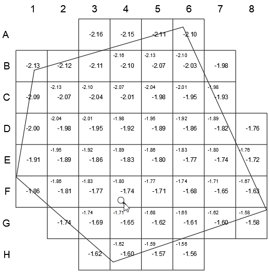
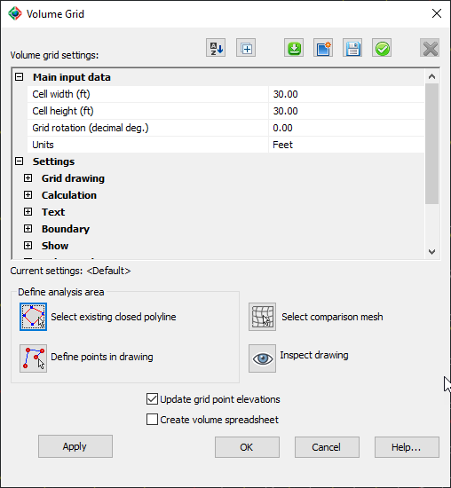
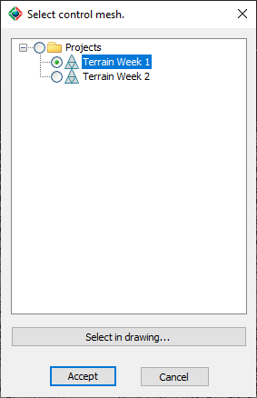

|
|
Toolbar:
Menu: CAD-Earth > Mesh > Mesh Explorer. Mesh Explorer node:
Context Menu: Earth Takeoff > Volume Grid > Create/Edit Volume Grid
|
|
|
Command line: CE_MESHEXPLORER
CAD-Earth version: Premium. |
(1).png)
.png)
.png)
(1).png)
Command description:
Draw a grid over the mesh, calculating depths at every intersection located inside an area defined by specifying points or selecting an existing closed polyline in the drawing. The depths are calculated by subtracting each point's elevation over a comparison mesh and the point elevation. Properties for the grid and grid elements such as color, line type, scale, width for lines, style, color, and text alignment can be specified. Grid elements such as row/column headers, depth annotations, area boundary, and grid lines can be displayed or hidden. An XLS spreadsheet file can be created, showing the calculated cut/fill areas and volumes at each station.

Example of a volume grid showing depth annotations.
Dialog box settings:

ØToolbar buttons.
|
Button |
Description |
|
Display alphabetically. Volume grid settings will display in ascending or descending alphabetical order. |
|
|
Expand/collapse all. All settings nodes will expand or collapse. |
|
|
Load visualization settings. A list of available visualization settings will be shown for selection. |
|
|
New visualization settings. A dialog box will display to type the name and description of a new visualization settings group, inheriting the current property values. |
|
|
Save visualization settings. Current properties will be saved to file. If you select the button to load visualization settings, the new settings will appear. |
|
|
Apply visualization settings. The current volume grid will be updated with the current properties. |
ØVolume grid settings. The properties and parameter values that you can change for each visualization item are the following:
•Main input data.
•Cell width. Distance between vertical lines.
•Cell height. Distance between horizontal lines.
•Grid rotation (decimal deg). All grid elements will be updated and rotated by the specified amount, covering the area extents.
•Units. Feet or meters.
•Settings.
•Grid drawing.
•Drawing style. Grid cells can be drawn with lines connecting each intersection, or with crosses or points at each intersection.
•Line color, type, scale and width. For horizontal and vertical grid lines.
•Line extension factor. Gridlines will be extended at every grid intersection by the specified factor if the draw extended lines drawing style has been set.
•Calculation.
•Consider grid cells partially inside region. Cells partially intersecting the area boundary will be considered for volume calculations.
•Calculate partial cell areas. The partial cell area inside the region will be considered for volume calculations.
•Text.
•Annotation.
•Text style. For depth and average depth annotations.
•Decimal places. Number of decimal positions for depth and average depth annotations.
•Show plus sign. For positive depth value annotations.
•Scale text to fit inside cells. If the text size for depth annotations is too big to fit in the cell and this option is checked, the text size will be recalculated to fit inside the grid cell.
•Header
•Text size and color. For row/column headers.
•Display row header with letters. Row headers will be labeled from A to Z, then AA to AZ, BA to BZ... from top to bottom until the end.
•Row header prefix. Text to include before the row header annotation.
•Display column headers with letters. Column headers will be labeled from A to Z, then AA to AZ, BA to BZ... from left to right until the end.
•Column header prefix. Text to include before column header annotation.
•Depth.
•Depth text size. For depth annotations at each grid intersection inside the region.
•Average depth text size. For average depth annotations inside or partially inside the region.
•Cut depth text color. Depth annotations with positive values will be drawn with this color.
•Fill depth text color. Depth annotations with negative values (fill) will be drawn with this color.
•Depth text alignment. Depth annotations will be drawn at each grid intersection with the alignment selected.
•Boundary.
•Line color, type, scale and width. For the region boundary specified for volume calculations.
•Show. Row/column headers, depth and average depth annotations, region boundary, and grid lines can be shown or hidden.
•Volume adjustment.
•Shrink percentage. The total fill volume will be multiplied by the shrinkage factor.
•Top soil thickness. The total cut-fill area will be multiplied by this value, added to the gross cut volume, and subtracted from the gross fill volume.
ØDefine analysis area.
•Select existing closed polyline.
•Define points in drawing.
ØSelect comparison mesh. The following dialog box will appear to select the comparison mesh selecting a tree node or selecting the the mesh in the drawing:

ØInspect drawing. The main dialog box will disappear and you can zoom-in or out to inspect the volume grid using the mouse wheel.
ØUpdate grid point elevations. You can uncheck this option to save processing time if you don't need to recalculate grid depths every time you modify a grid property and apply the change.
ØCreate volume spreadsheet. An XLS spreadsheet file will be created, showing the average cut/fill depth, the cell partial area, cut/fill area, and volume at each grid station inside the region analyzed. The grid cell width and height, shrinkage percent, strip topsoil depth, and net cut/fill areas and volumes will also be shown. This spreadsheet will be automatically opened in Excel if it is installed on the computer.
Tips:
•If you modify the mesh or comparison mesh vertices, you must use this command to update depth and volume calculations.
•You can hide/show grid elements in the 'Show' section of the volume grid settings. You can also use the command to show/hide the entire volume grid.
Copyright © 2023 Arqcom Software
Google Earth© is a registered trademark of Google inc. All other trademarks are the property of their respective owners.